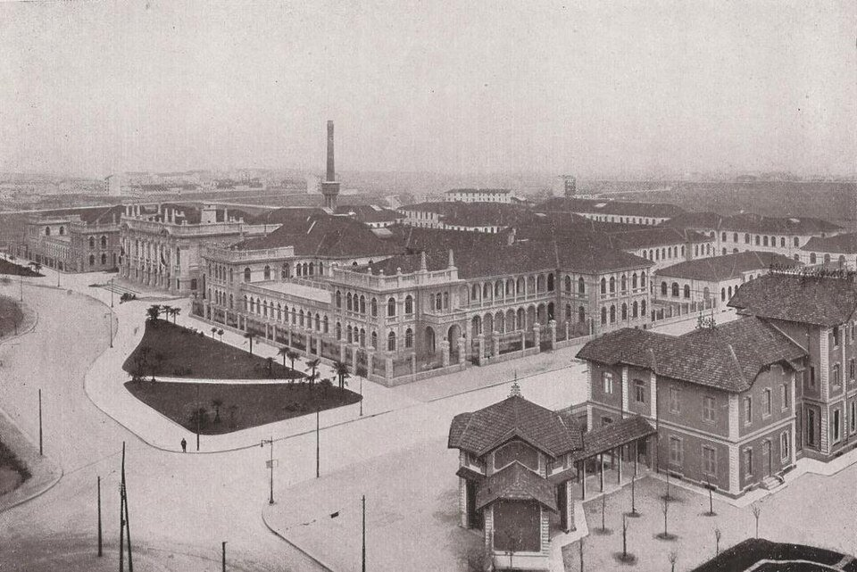
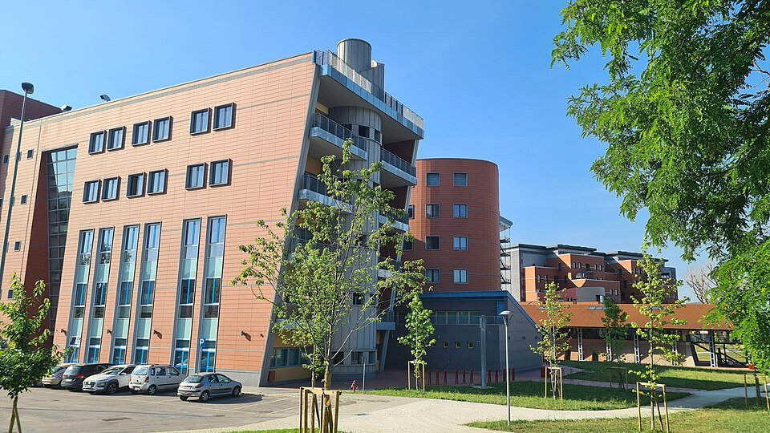
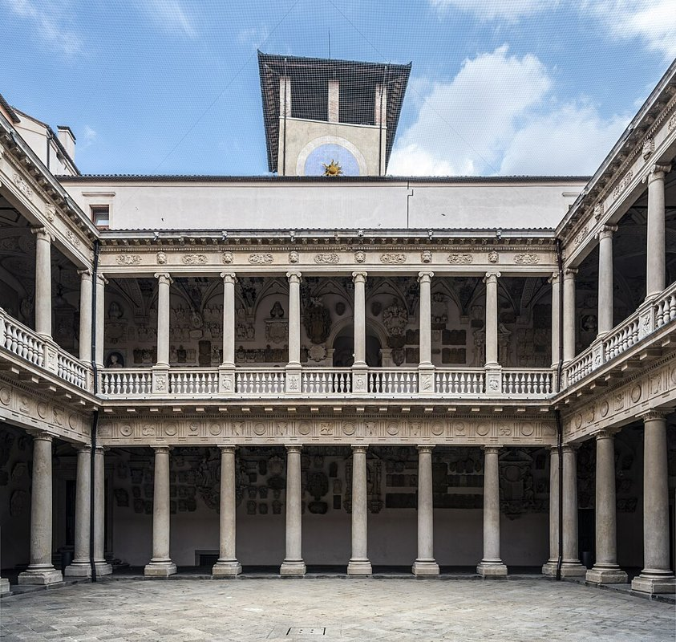
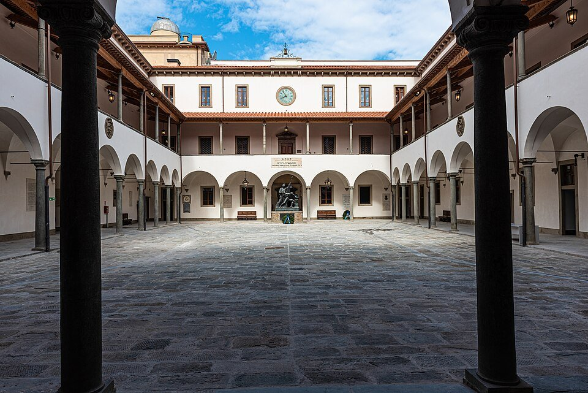
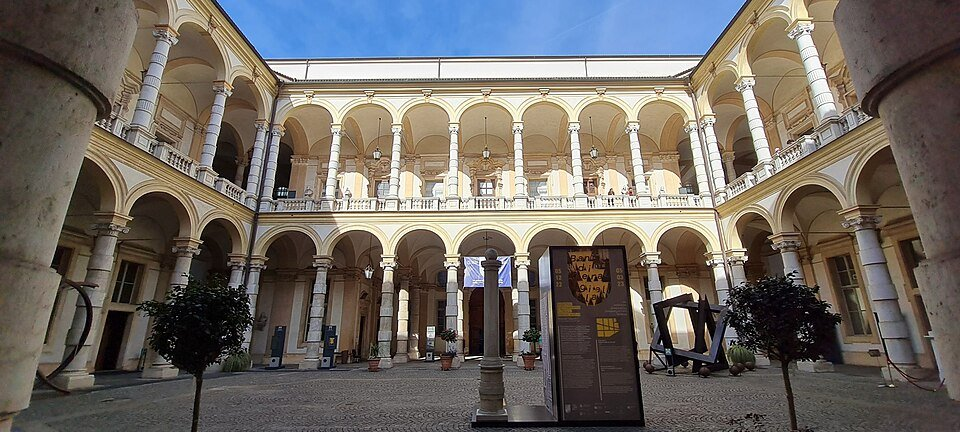
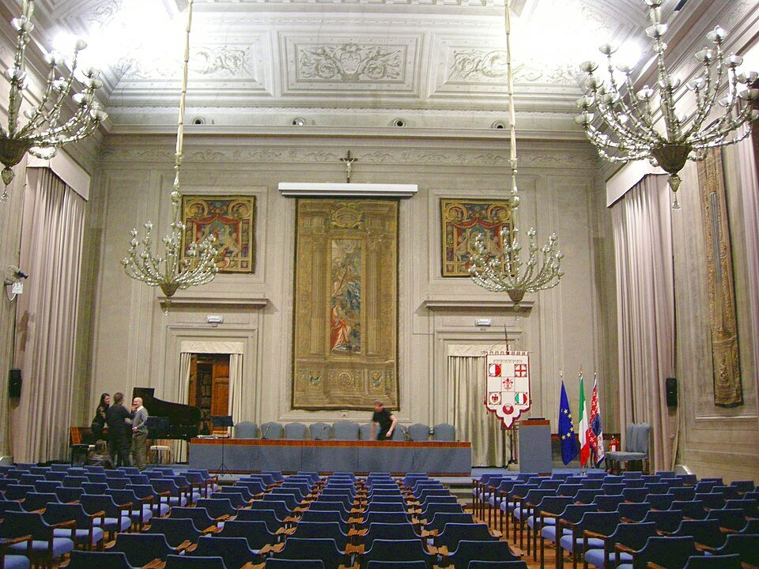

世界大学総合ランキング
大学名・写真と一緒に、QS・THE・ARWUの世界順位を比較できます。掲載8大学の比較です。
| 大学名 | 所在地 | QS 2027 | THE 2027 | ARWU 2026 |
|---|---|---|---|---|
 ミラノ工科大学Politecnico di Milano | ミラノロンバルディア | 87位 ↗ | 157位 ↗ | 201–300位 ↗ |
| ローマラツィオ | 111位 ↗ | 147位 ↗ | 151–200位 ↗ | |
 ボローニャ大学University of Bologna | ボローニャエミリア＝ロマーニャ | 123位 ↗ | 111位 ↗ | 201–300位 ↗ |
 パドヴァ大学University of Padua | パドヴァヴェネト | 204位 ↗ | 224位 ↗ | 151–200位 ↗ |
 ピサ大学University of Pisa | ピサトスカーナ | 341位 ↗ | 401–450位 ↗ | 201–300位 ↗ |
 トリノ大学University of Turin | トリノピエモンテ | 405位 ↗ | 376–400位 ↗ | 201–300位 ↗ |
 フィレンツェ大学University of Florence | フィレンツェトスカーナ | 409位 ↗ | 351–375位 ↗ | 301–400位 ↗ |
| ヴェネツィアヴェネト | 600位 ↗ | 451–500位 ↗ | 未記載 |

分野別の世界ランキング
日本語と正式な分野名を併記しています。異なる分野・年度・評価機関を混ぜずに比較してください。
| 大学 | 機関・年度 | 分野 | 世界順位 |
|---|---|---|---|
| ミラノ工科大学 | QS 2026 | 建築学・建造環境 Architecture & Built Environment | 6位 ↗ |
| ミラノ工科大学 | QS 2026 | アート・デザイン Art & Design | 7位 ↗ |
| ミラノ工科大学 | QS 2026 | 工学・技術 Engineering & Technology | 20位 ↗ |
| ローマ・サピエンツァ大学 | QS 2026 | 古典・古代史 Classics & Ancient History | 1位 ↗ |
| ローマ・サピエンツァ大学 | QS 2026 | 考古学 Archaeology | 7位 ↗ |
| ローマ・サピエンツァ大学 | QS 2026 | 美術史 History of Art | 7位 ↗ |
| ローマ・サピエンツァ大学 | QS 2026 | 物理学・天文学 Physics & Astronomy | 38位 ↗ |
| パドヴァ大学 | QS 2026 | 生命科学・医学 Life Sciences & Medicine | 100位 ↗ |
| パドヴァ大学 | QS 2026 | 自然科学 Natural Sciences | 111位 ↗ |
| ヴェネツィア・カフォスカリ大学 | QS 2026 | 古典・古代史 Classics & Ancient History | 24位 ↗ |
| ヴェネツィア・カフォスカリ大学 | QS 2026 | 現代語学 Modern Languages | 69位 ↗ |
| ピサ大学 | ARWU 2026 | 獣医学 Veterinary Sciences | 27位 ↗ |
| トリノ大学 | ARWU 2026 | 農学 Agricultural Sciences | 50位 ↗ |
| ミラノ工科大学 | THE 2026 | 芸術・人文科学 Arts and Humanities | 69位 ↗ |
| ミラノ工科大学 | THE 2026 | コンピューター科学 Computer Science | 101–125位 ↗ |
ランキングの見方
QSは評判や研究など、THEは教育・研究など、ARWUは研究実績を中心に評価します。授業言語・学費・専攻内容も合わせて大学を選びましょう。
ARWUの「151–200」などは順位帯です。帯の中に独自の順位を付けていません。「未記載」は本ページに掲載する順位の記載がない項目です。
出典・確認日
確認：2026年10月21日。総合順位はQS 2027・THE 2027・ARWU 2026、分野別は各行に年度を表示しています。